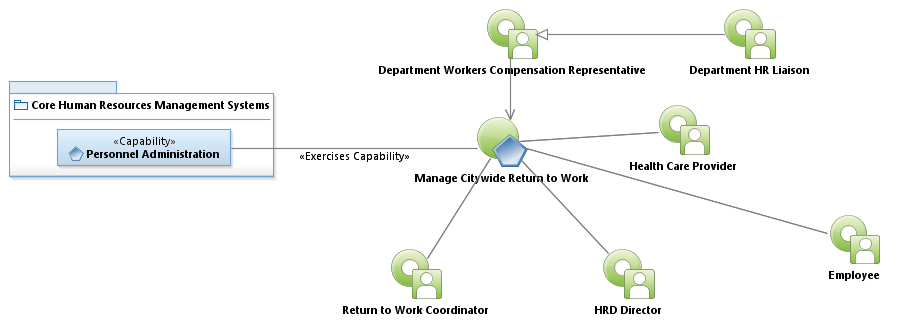
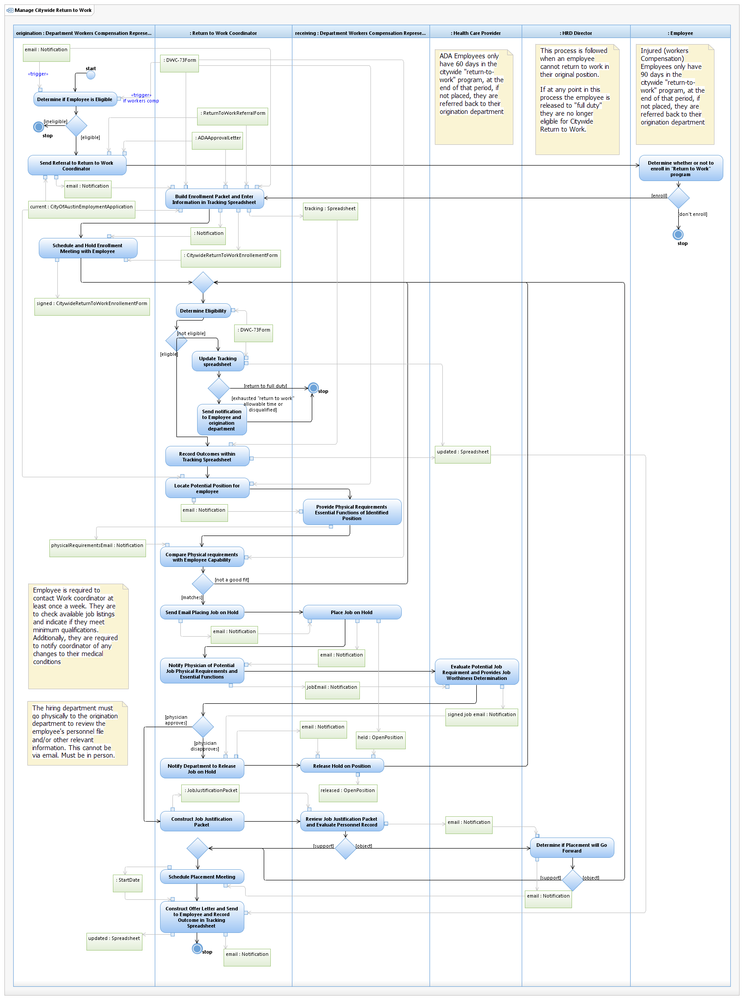

Use Case Model: Manage Citywide Return to Work
Architect: Aaron Brown, IT Enterprise Architect Senior
Date Last Modified: 3/14/2013
User Review: Rick Thomas, Shelly Sheppard, Sharon Huckabee
Date: 3/14/2013
When an employee has been injured on the job or Americans with Disabilities Act (ADA) approved, the City offers the benefit of the Return to Work program. This program is designed to afford the employee time to recover from their injury and possibly place them in an alternate position.
Follow link to Role Definitions

Use Case Model: Manage Citywide Return to Work

Activity Model: Manage Citywide Return to Work
Activity Documentation
| Activity | Documentation |
|---|---|
| Determine Eligibilty | If the employee is returned to full duty by their physician, then they are no longer eligible for the "citywide return to work" program. If the employee has exhausted their time in the "citywide return to work" program they are also no longer eligble. The employee must follow the guidelines of the program, otherwise they can be considered ineligible. ADA Employees only have 60 days in the citywide "return-to-work" program, at the end of that period, if not placed, they are referred back to their origination department Injured (workers Compensation) Employees only have 90 days in the citywide "return-to-work" program, at the end of that period, if not placed, they are referred back to their origination department |
| Locate Potential Position for employee | Not only does the employee have to meet minimum qualifications for the position, the position must be at an equal of lesser pay grade. The employee can also specify on the Enrollment form that they will not accept a lower grade or lower salary. |
| Schedule Placement Meeting | The hiring department is not allowed to interview the employee. They are only allowed to provide job description, communicate expectations, and set a start date, where they report, who they report to, hour, etc. |
Note: When the activity is self explanatory no documentation is provided.